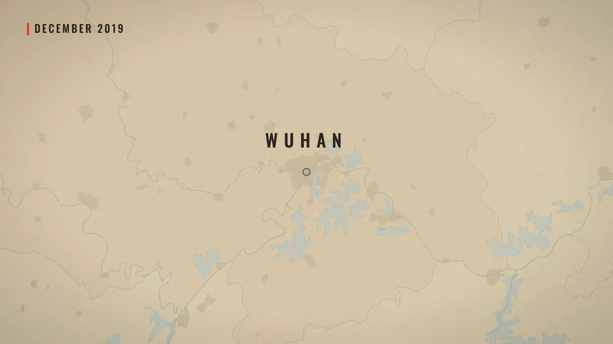
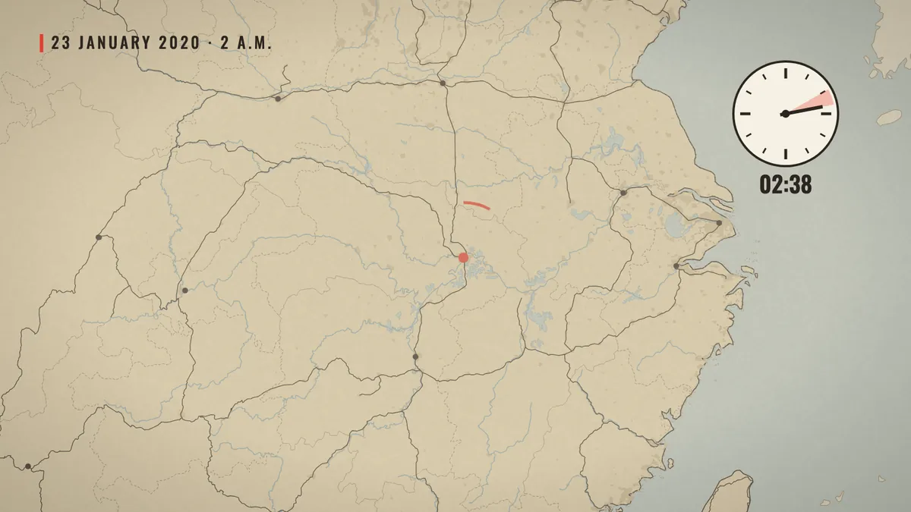
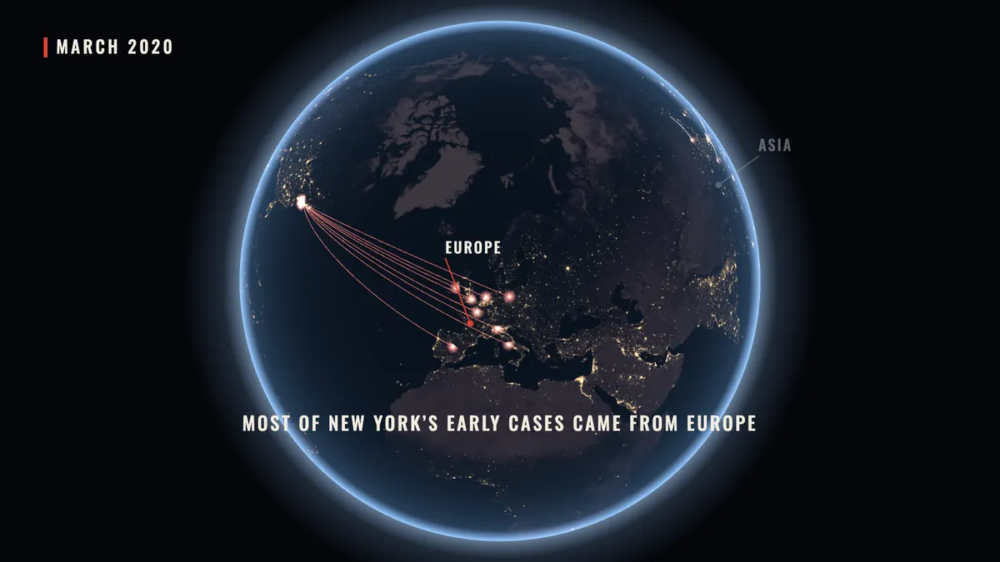
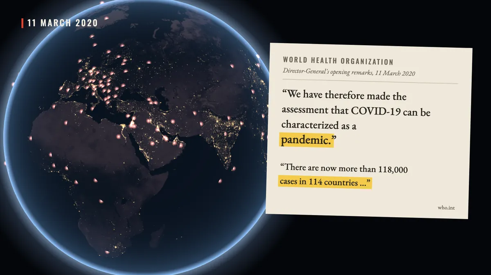
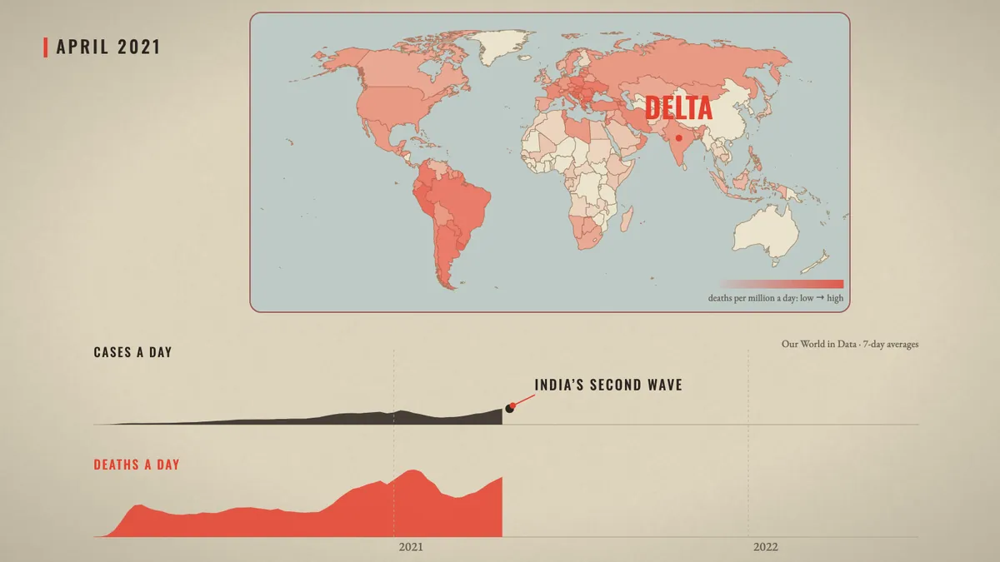
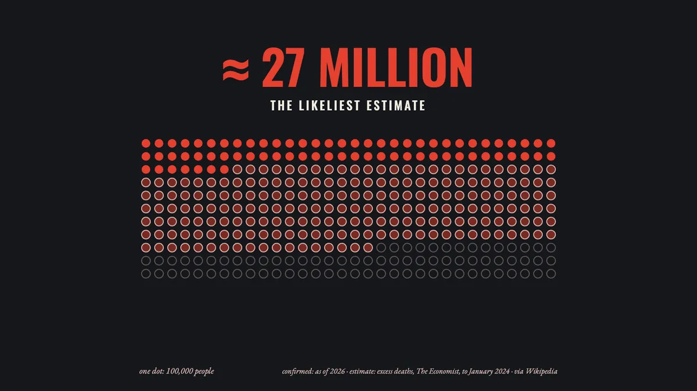
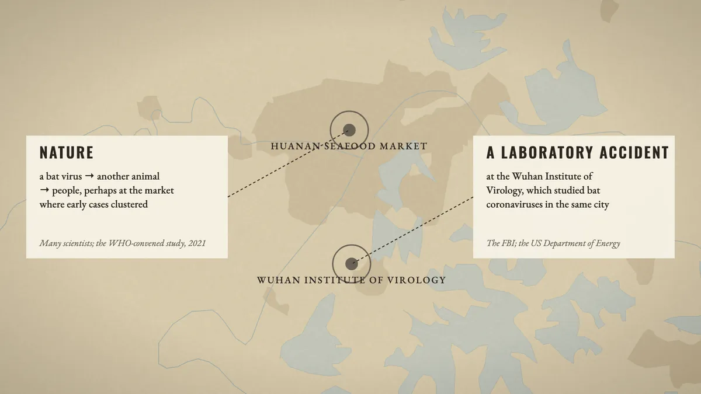

What we set out to do
Our earlier documentary, Madness and Civilization, is pictures and words. This one tries the other kind of explainer, the kind Vox and Johnny Harris make: maps that move, numbers that land on the word that says them, documents pulled into frame and marked up. The subject was chosen for that: the pandemic happened on a map, day by day, and almost everything about it was counted.
Before any frame was made, Claude studied three of those videos cut by cut and wrote down how each transition works: what carries the eye from one picture to the next, where the camera goes, how long a number stays on screen. Those notes, not a style sheet, were the brief.
One map, all the way through
The film has one spine: a warm paper map of the world with a date chip in the corner. It comes back in every part with something new on it: one dot in Wuhan, then the train lines out of the city before the New Year, then the countries telling people to stay home, then the deaths per million, wave after wave.


When the story leaves one place for the whole world, the map becomes a night globe (three.js, NASA's Black Marble city lights). Both are drawn in the same orthographic projection, so the globe can turn, push in, and become the paper map without a cut. The countries are Natural Earth outlines, projected once with d3-geo into small script files, so the finished page needs no server and no map service.

One source for every number
Every number on screen comes from one named source, written in small type under it: Our World in Data for cases, deaths, vaccines and stay-at-home orders; Wikipedia for events and dates; the WHO's own transcript for its words. The two do not always agree. Our World in Data counts by the day a death was reported, so it lags behind the news: by its count Italy passed China a few days after Wikipedia says it did. Where they disagree, the narration was written around the date rather than mixing the two.
Counters roll up as the voice says the number and stop exactly on it. The stay-at-home map counts the countries as the date runs, so when the narration says “more than a hundred and twenty”, the counter reads 121 and the date chip shows the first day that was true.

A part at a time
It began as a 107-second sample: the cold open, Wuhan, the doctors who were silenced, and the trains. The user watched it, liked it, and asked for the rest of the same film, one part at a time, under ten minutes. Every part went through the same steps:
- Research. The Wikipedia articles and the Our World in Data tables, saved locally with their revision numbers.
- Narration, written in our own words, with a mark on every word that triggers something on screen.
- Voice. ElevenLabs v4, the voice “Roger”, sped up 1.1 times. The word times it returns place every mark.
- Beats, built in code and checked on contact sheets of stills before anything moved.
- Music. One track per part from Google's Lyria 3, levelled to the others, crossfading over two seconds so the music never stops.
- Review. The part exported as a video, and a fresh Claude, with no memory of making it, watching the frames as a director.

What the reviews caught
Three director reviews watched the film from frames alone and checked every claim against the saved sources. They found things a maker misses: two different dates on screen at once; a vaccine rewind that stopped in November while the label said 2 December; three seconds of empty paper under a sentence about money; a question mark that sat on the market's label, so it read as “the market?” instead of “which one?”. Each finding came with a time, a reason and a fix, and the next round checked the fixes.
The user's own notes changed the film more. The opening first said the pandemic was “the biggest crisis of our generation, and we are already forgetting it”; the user kept only the first half, and the line was cut from the recording rather than voiced again. The join between the approved sample and the new parts looked like two films, so the sample's last picture now fades faster. A world map that stayed white while the death toll climbed beneath it got its own colour, deaths per million.

The question left open
The first outline left out where the virus came from. Near the end the user asked for it, with one rule: “don't favour zoonosis; treat them fairly.” The two answers get the same card, the same size and colour, one fact each and about the same time. The film says who leans which way: many scientists and the WHO-convened study towards a natural spillover, the FBI and the US Department of Energy towards a laboratory accident. It ends on what is known for certain: the early patient lists, swabs and blood samples were never fully shared.

The numbers
Everything else, the research, the script, the code for every beat and the reviews, was done by Claude (Opus) with the Papermorph Skill, with the user watching each cut and giving notes.
.jpg){kind=link}


.jpg){kind=link}